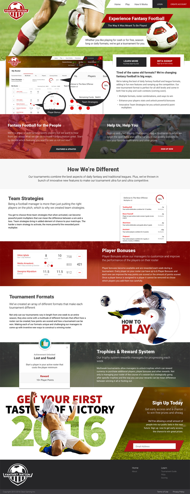

Fantasy Nation
Some of My Design Projects
Some of My Design Projects
For a little while I've been working on thing side project Fantasy Nation, a fantasy soccer application I'm building with a small, remote team in Ireland and the UK. I’ve been infatuated with fantasy football for a few years now and had even worked on some concepts for my own fantasy football application in the past, so when I got contact to work on this, even being a different sport, I had to do it.
First task with Fantasy Nation was creating a style guide. I knew we were going to need lots of comps, with lots of revisions as we experimented with different formats, features, and versions of the app. I've been a big proponent of lean UX but don't always get to practice it. For Fantasy Nation I wanted simple, clean components that could be assembled quickly or changed out just as quickly. The front-end was built with LESS and Bootstrap so I wanted elements that fit easy into the framework.
Since I had the privilege of making the design decisions for this project there was no need to bother with anything more than a few paper wireframes. I jumped right into Sketch and started compiling colors, fonts and building components. Without the need for formal deliverables or having a lengthy approval process we were really able to knock this project out fast.
I don't create a lot of logos but for this one I wanted something simple that could easily have multiple applications. Ended up with two different options. The left and center options is the default logo and the right is used for small spaces and when a horizontal option is needed.
For the homepage I created lots of little component sections, which can be swapped out or removed as needed. Since we're rolling out a beta first and leagues will come and go, and we'll have different promotions and so on. It's nice to be able to change out areas without effecting the overall design.
Below is an early version of the tournament view. This is one of the more complicated views and shows a lot of the features that will be rolled out after the beta. Again, the goal was a simple design that can be easily updated and edited. We want to be able to roll out revisions on a weekly basis, based on user testingm and the simple styles and color scheme make that easier, as least from an html and css standpoint.
This project has over a year now and we've grown to a seven member, remote team and none of us working on it full time. Considering the size of the team and the scope of the project I'm pretty impressed with the amount of work we've been able to produce to date. We're currently doing lots of testing with live data and hope to bring on some external users soon.
Being such a small team I was able to take on pretty much every role other than developer, such as: copywriter, project manager, marketer, designer, user experience expert, tester and so on. When I have the option I always like doing more than just design and with this project I'm able to get my hands on pretty much everything. My favorite role so far has been being the product owner for the project. Prioritizing the backlog and creating user stories feels like a natural extension of the design process.
It's been a long journey getting this product out there and we're finally there! Go play some fantasy football and let me know what you think.